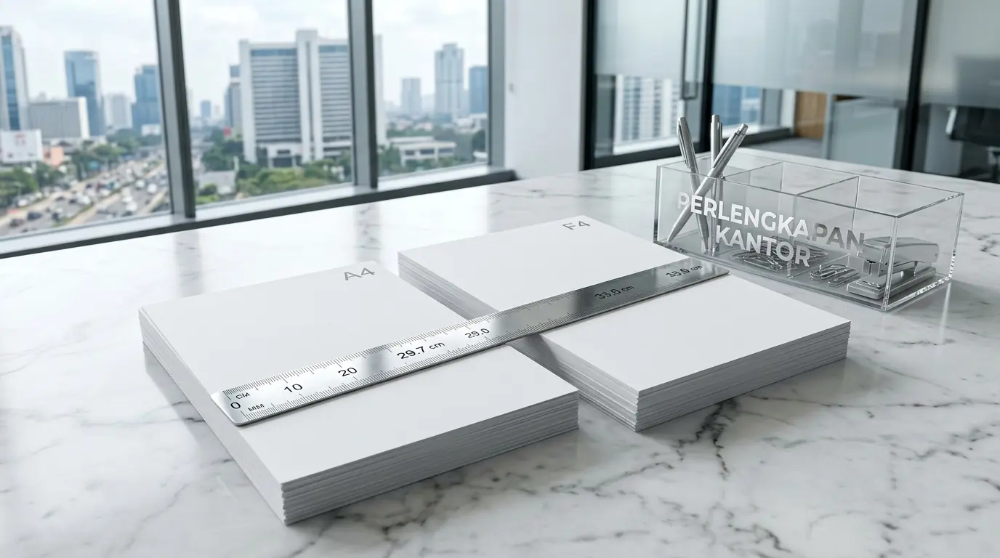

Apa Perbedaan Kertas A4 dan F4 dari Sisi Ukuran dan Standar Internasional?
Perbedaan kertas A4 dan F4 dari sisi ukuran terletak pada dimensi fisiknya, di mana A4 memiliki lebar 210 mm (21 cm) dan panjang 297 mm (29,7 cm), sedangkan F4 memiliki lebar 215 mm (21,5 cm) dan panjang 330 mm (33 cm). Berdasarkan data Indonesian Office Paper Consumption Survey 2025-2026, penggunaan kertas A4 mendominasi 64,2% kebutuhan cetak dokumen internasional dan korespondensi email, sementara kertas F4 mengambil porsi 31,8% khusus untuk pencetakan berkas hukum, salinan ijazah, dan laporan akuntansi. Laporan Asia Paper Standardization Index 2025 juga mencatat bahwa 88% kesalahan cetak teks terpotong di bagian bawah kertas disebabkan oleh kekeliruan pemilihan profil ukuran F4 pada sistem operasi komputer.
Memahami dimensi kertas sangat penting untuk memastikan dokumen perusahaan tercetak rapi tanpa ada margin teks yang terpotong. Penggunaan kertas berukuran tepat juga mempercepat proses pengarsipan di dalam binder atau ordner kearsipan. Untuk mengamankan ketersediaan media cetak berkualitas tinggi, bekerja sama dengan distributor resmi Perlengkapan Kantor menjadi pilihan paling efisien bagi divisi pengadaan perusahaan Anda.
Berikut adalah tabel perbandingan spesifikasi ukuran dan fungsi antara kertas A4 dan F4:
| Parameter Pembanding | Kertas A4 (ISO Standard) | Kertas F4 / Folio (Regional) |
|---|---|---|
| Dimensi Milimeter (mm) | 210 mm x 297 mm | 215 mm x 330 mm |
| Dimensi Sentimeter (cm) | 21,0 cm x 29,7 cm | 21,5 cm x 33,0 cm |
| Dimensi Inci (Inches) | 8,27 in x 11,69 in | 8,46 in x 12,99 in |
| Standar Internasional | ISO 216 (Sangat Diakui Global) | Standar Non-ISO (Regional Asia/Indonesia) |
| Peruntukan Dokumen Utama | Surat Bisnis, Skripsi, Laporan Intern | Akta Notaris, Ijazah, Lampiran Keuangan |
- Kertas A4 memiliki rasio aspek 1:√2 (1:1.4142) yang memungkinkan pengecilan atau pembesaran dokumen secara proporsional ke ukuran A3 atau A5.
- Kertas F4 sering disebut juga sebagai kertas Folio atau HVS Folio di pasar perkantoran Indonesia, namun berbeda dari ukuran Legal standar Amerika Serikat (216 x 356 mm).
- Menggunakan map ordner berukuran Folio (F4) dapat menampung dokumen A4 maupun F4 tanpa membuat ujung kertas terlipat.
Mengapa Pengaturan Ukuran Kertas F4 di Komputer Sering Mengalami Masalah?
Pengaturan ukuran kertas F4 di komputer sering mengalami masalah karena ukuran F4 tidak selalu tersedia secara otomatis pada daftar ukuran kertas standar bawaan sistem operasi Microsoft Windows maupun macOS. Sebagian besar printer global hanya menyertakan pilihan Letter, A4, dan Legal. Akibatnya, jika dokumen F4 dicetak menggunakan profil A4, bagian bawah dokumen sepanjang 33 mm akan terpotong; sedangkan jika dicetak dengan profil Legal, margin bawah menjadi terlalu lebar dan tata letak berantakan.
Oleh karena itu, pengguna harus menambahkan ukuran kustom (Custom Size) secara manual dengan memasukkan lebar 21,5 cm dan tinggi 33,0 cm pada menu printer properties agar hasil cetakan presisi.

Pasokan dus kertas HVS A4 dan F4 dari penyedia Perlengkapan Kantor untuk menunjang pencetakan dokumen legal dan administrasi perusahaan.
Langkah Teknis Mengatur Kertas F4 pada Software Pengolah Kata:
- Masuk ke Menu Page Setup: Buka dokumen di Microsoft Word atau software pengolah kata lainnya, lalu arahkan kursor ke tab Layout atau Page Layout.
- Pilih Custom Paper Size: Klik pada pilihan Paper Size, lalu gulir ke bagian paling bawah hingga menemukan opsi More Paper Sizes atau Custom Size.
- Input Dimensi Presisi: Masukkan angka Width 21.5 cm (atau 215 mm / 8.46 in) dan Height 33.0 cm (atau 330 mm / 12.99 in) pada kolom yang tersedia.
- Simpan Preset Printer: Simpan pengaturan tersebut dengan nama F4 atau Folio agar dapat digunakan kembali secara praktis tanpa perlu mengetik ulang dimensi.
Bagaimana Memilih Antara Kertas A4 dan F4 Sesuai Kebutuhan Dokumen Perusahaan?
Memilih antara kertas A4 dan F4 sesuai kebutuhan dokumen perusahaan dilakukan dengan mengidentifikasi jenis berkas yang akan dicetak, di mana kertas A4 digunakan untuk korespondensi resmi standar, proposal bisnis, dan formulir pendaftaran, sedangkan kertas F4 dipilih untuk cetakan akta notaril, dokumen perundang-undangan, serta lembar kerja tabel akuntansi yang membutuhkan area cetak lebih panjang.
Karakteristik Penggunaan Masing-Masing Jenis Kertas:
- Kertas A4 untuk Standar Global: Ideal untuk berkas ekspor-impor, jurnal ilmiah, surat elektronik yang dicetak, perjanjian kerja standar, serta dokumen inter-departemen yang mengacu pada format internasional.
- Kertas F4 untuk Kapasitas Baris Lebih Banyak: Sangat cocok untuk mencetak lembaran tabel akuntansi yang memiliki banyak baris data tanpa perlu memperkecil ukuran font, serta memenuhi standar fisik berkas pengadilan, notaris, dan instansi pemerintahan di Indonesia.
- Sempurnakan fasilitas pencetakan dokumen di ruang kerja Anda dengan memesan dus kertas HVS A4 dan F4 dari penyedia Perlengkapan Kantor resmi yang menawarkan harga promo grosir.
- Gunakan ordner f4 kearsipan grosir untuk menyimpan dokumen cetak agar tidak kusut dan mudah diakses.
- Bandingkan kualitas merek media cetak terkemuka pada ulasan kertas HVS PaperOne vs Sinar Dunia untuk efisiensi anggaran korporat.
Faktor Apa Saja yang Memengaruhi Kualitas Cetak pada Kertas A4 dan F4?
Faktor yang memengaruhi kualitas cetak pada kertas A4 dan F4 meliputi tingkat gramatur kertas (70gsm, 80gsm, atau 100gsm), derajat keputihan serat kertas (brightness), kepresisian pemotongan tepi kertas oleh pabrik, serta tingkat kelembapan ruangan tempat penyimpanan dus kertas. Kertas berpotongan presisi tinggi memastikan proses penarikan kertas oleh rol printer berjalan mulus tanpa risiko ganda (double-feed).
- Gramatur 70gsm: Sangat hemat biaya dan ideal untuk draf berkas harian, nota internal, serta fotokopi berkecepatan tinggi bervolume besar.
- Gramatur 80gsm: Sangat direkomendasikan untuk cetak bolak-balik (duplex), presentasi klien, serta surat resmi karena ketebalannya mampu menahan resapan tinta agar tidak tembus (ghosting) ke sisi belakang.
- Derajat Keputihan (Brightness >95%): Menghasilkan kontras warna cetak yang tajam, membuat grafik, bagan, dan teks hitam terlihat tegas dan profesional.
- Penyimpanan Bebas Lembap: Menyimpan dus kertas di atas palet kayu atau rak lemari berpendingin udara mencegah kertas melengkung (curling) yang kerap memicu kemacetan mesin cetak.
Mendapatkan kepastian produk original dari distributor Perlengkapan Kantor membantu menjaga performa operasional seluruh mesin cetak perusahaan Anda dari potensi kerusakan rol penarik kertas.
Pertanyaan Populer Seputar Perbedaan Kertas A4 dan F4 (FAQ)
Kesimpulan Praktis
Memahami perbedaan kertas A4 dan F4 merupakan langkah mendasar dalam menjaga kerapian administrasi dan efisiensi pencetakan dokumen di setiap perusahaan. Didukung oleh pasokan kertas HVS lengkap dan berkualitas dari Perlengkapan Kantor, seluruh kebutuhan operasional cetak bisnis Anda terjamin terpenuhi secara sempurna.
Pastikan stok kertas HVS A4 dan F4 di kantor Anda selalu aman dengan harga distributor grosir langsung. Hubungi tim konsultan kami sekarang untuk mendapatkan penawaran harga terbaik serta pengiriman cepat ke lokasi kantor Anda!

Penulis: Tim Redaksi Perlengkapan Kantor
Divisi edukasi media cetak dan perlengkapan administrasi perkantoran di Perlengkapan Kantor. Berfokus pada standarisasi dokumen korporat, efisiensi pengadaan ATK skala B2B, serta panduan teknis operasional perkantoran modern. Ditinjau oleh Pakar Spesialis Media Cetak & Administrasi Perkantoran.